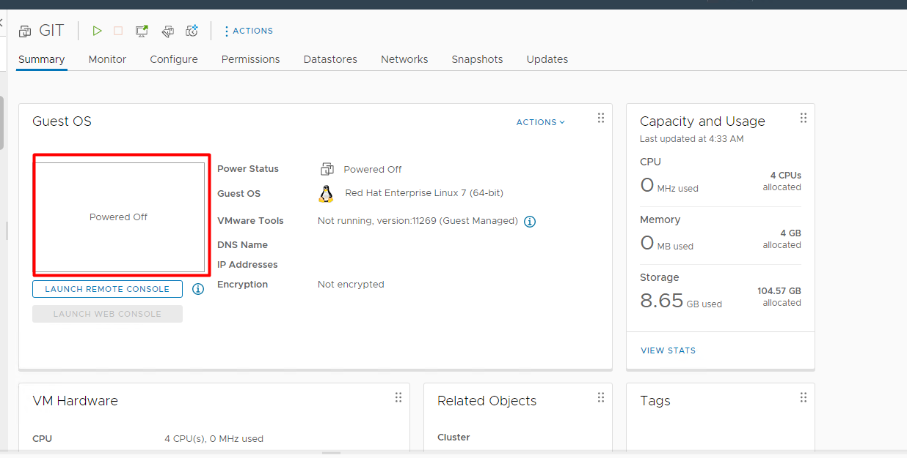
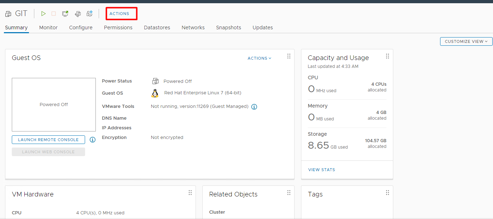
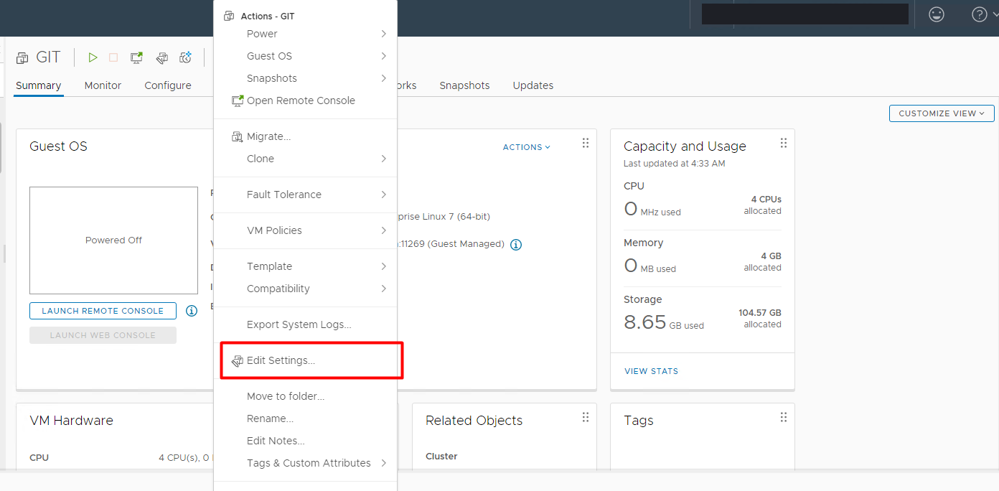
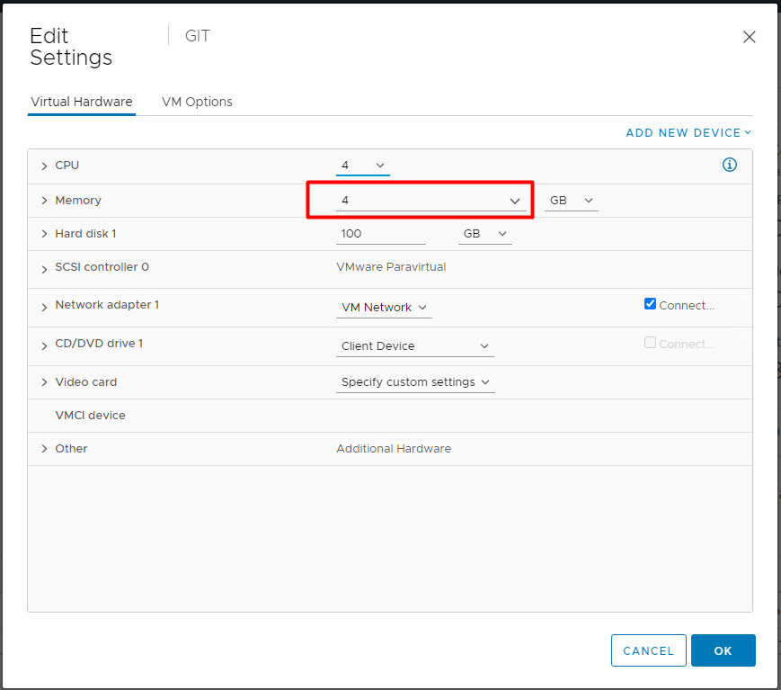

A quick, no-drama runbook for bumping the memory allocation on a VM through the vSphere Client. This requires a brief outage on the VM — memory hot-add isn't enabled by default on most templates, so the safest path is a clean power-off, resize, and power-on.
Steps
1. Log in to vCenter and navigate to the VM
Open the vSphere Client, find the VM in the inventory, and confirm it's powered off before making hardware changes. The Summary tab shows current allocation — in this example, 4 vCPUs and 4 GB of memory allocated.

2. Open Actions → Edit Settings
From the toolbar (or right-click the VM), open Actions and choose Edit Settings…


3. Change the Memory value
In the Virtual Hardware tab, update the Memory field to the new size (and unit — MB/GB) and click OK.

4. Power the VM back on
That's it — the new memory allocation takes effect on the next boot. Power the VM on and
confirm the guest OS sees the updated total (e.g. free -h on Linux,
Task Manager / systeminfo on Windows).
Notes
- If the Memory field is greyed out, the VM is still powered on — this operation isn't hot-add unless that's explicitly enabled on the VM (and supported by the guest OS).
- Increasing memory above the host's available capacity can trigger ballooning or swapping cluster-wide — check Capacity and Usage on the host/cluster first.
- For memory-hot-add-enabled VMs, the same Edit Settings change can apply without powering off — but always verify hot-add is supported by the guest OS before relying on it.
Questions about a trickier vCenter resizing scenario? Drop a mail at vsiranjeevi93@gmail.com.